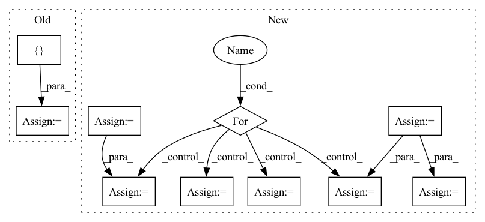

Pattern ID :9597

Before Change
num_threads,
)
pipeline_components: List[PipelineComponent]
pipeline_components = [predictor_pipe_component]
for _ in range(num_threads):
pipeline_components.append(copy(predictor_pipe_component))
After Change
// try to copy as little as possible
assert isinstance(predictor_pipe_component.predictor, TPFrcnnDetector)
tmp_tp_predictor = predictor_pipe_component.predictor.tp_predictor
tmp_predictor = predictor_pipe_component.predictor
tmp_dp_manager = predictor_pipe_component.dp_manager
predictor_pipe_component.dp_manager = None // type: ignore
predictor_pipe_component.predictor = None // type: ignore
tmp_predictor.tp_predictor = None
for _ in range(num_threads - 1):
copy_pipe_component = copy(predictor_pipe_component)
copy_pipe_component.predictor = copy(tmp_predictor)
copy_pipe_component.predictor.tp_predictor = copy(tmp_tp_predictor)
copy_pipe_component.dp_manager = copy(tmp_dp_manager)
pipeline_components.append(copy_pipe_component)
predictor_pipe_component.dp_manager = tmp_dp_manager
predictor_pipe_component.predictor = tmp_predictor
predictor_pipe_component.predictor.tp_predictor = tmp_tp_predictor
pipeline_components.append(predictor_pipe_component)
self.dataset = dataset
In pattern: SUPERPATTERN
Frequency: 3
Non-data size: 10
Instances
Fragment ID: 34468365
Project Name: deepdoctection/deepdoctection
Commit Name: f7f2ac859e2681a9a27fd8dd48ff0ae580398ae3
Time: 2021-12-20
Author: jm@drjanismeyer.de
File Name: deep_doctection/eval/eval.py
M Class Name: Evaluator
N Class Name: Evaluator
M Method Name: __init__(5)
N Method Name: __init__(5)
M Parent Class:
N Parent Class:
M File Name: deep_doctection/eval/eval.py
N File Name: deep_doctection/eval/eval.py
M Start Line: 73
M End Line: 77
N Start Line: 73
N End Line: 93
'>
Before Change
data = batch["data"].numpy()
mask = batch["mask"].numpy()
B, C, H, W = data.shape
T_aug = []
for i in range(B):
if np.mod(i, config["window_size"]) == 0:
continue
if rot_max != 0:
rot = np.random.uniform(-rot_max, rot_max)
M = cv2.getRotationMatrix2D((W / 2, H / 2), rot * 180 / np.pi, 1.0)
img = data[i].squeeze()
mmg = mask[i].squeeze()
data[i] = cv2.warpAffine(img, M, (W, H), flags=cv2.INTER_CUBIC).reshape(C, H, W)
mask[i] = cv2.warpAffine(mmg, M, (W, H), flags=cv2.INTER_CUBIC).reshape(C, H, W)
T_aug += [torch.from_numpy(get_transform(0, 0, -rot))]
else:
T_aug += [torch.from_numpy(np.identity(4, dtype=np.float32))]
batch["data"] = torch.from_numpy(data)
batch["mask"] = torch.from_numpy(mask > 0.5).type(batch["data"].dtype) // make into a binary mask
batch["T_aug"] = T_aug
return batch
After Change
_, C, H, W = data.shape
for i in range(batch_size):
rot = np.random.uniform(-rot_max, rot_max)
T = get_transform(0, 0, -rot)
for j in range(1, window_size):
k = j + i * window_size
img = data[k].squeeze()
mmg = mask[k].squeeze()
M = cv2.getRotationMatrix2D((W / 2, H / 2), rot * 180 * j / np.pi, 1.0)
data[i] = cv2.warpAffine(img, M, (W, H), flags=cv2.INTER_CUBIC).reshape(C, H, W)
mask[i] = cv2.warpAffine(mmg, M, (W, H), flags=cv2.INTER_CUBIC).reshape(1, H, W)
T_21[i - 1] = np.matmul(T, T_21[i - 1])
batch["data"] = torch.from_numpy(data)
batch["mask"] = torch.from_numpy(mask > 0.5).type(batch["data"].dtype) // make into a binary mask
batch["T_21"] = torch.from_numpy(T_21)
'>
Fragment ID: 34467853
Project Name: utiasasrl/hero_radar_odometry
Commit Name: 69b518ec294c236dc4305129ec07282c5d2e007c
Time: 2021-03-04
Author: keenburn2004@gmail.com
File Name: datasets/transforms.py
M Class Name: AnonimousClass
N Class Name: AnonimousClass
M Method Name: augmentBatch(2)
N Method Name: augmentBatch(2)
M Parent Class:
N Parent Class:
M File Name: datasets/transforms.py
N File Name: datasets/transforms.py
M Start Line: 8
M End Line: 28
N Start Line: 10
N End Line: 29
'>
Before Change
// Select data
data = []
labels = []
pointer = self.data_idx
for data_point in range(self.num_data_points):
datum, label = self.dataloader.dataset[pointer]
data += [datum]
labels += [torch.as_tensor(label)]
pointer += server_payload["data"].classes
pointer = pointer % len(self.dataloader.dataset)
data = torch.stack(data).to(**self.setup)
labels = torch.stack(labels).to(device=self.setup["device"])
// Compute local updates
shared_grads = []
shared_buffers = []
for query in range(self.num_user_queries):
payload = server_payload["queries"][query]
parameters = payload["parameters"]
buffers = payload["buffers"]
with torch.no_grad():
for param, server_state in zip(self.model.parameters(), parameters):
param.copy_(server_state.to(**self.setup))
for buffer, server_state in zip(self.model.buffers(), buffers):
buffer.copy_(server_state.to(**self.setup))
// Compute the forward pass
outputs = self.model(data)
loss = self.loss(outputs, labels)
shared_grads += [torch.autograd.grad(loss, self.model.parameters())]
shared_buffers += [[b.clone().detach() for b in self.model.buffers()]]
shared_data = dict(gradients=shared_grads, buffers=shared_buffers,
After Change
optimizer = torch.optim.SGD(self.model.parameters(), lr=self.local_learning_rate)
seen_data_idx = 0
for step in range(self.num_local_updates):
data = user_data[seen_data_idx: seen_data_idx + self.num_data_per_local_update_step]
labels = user_labels[seen_data_idx: seen_data_idx + self.num_data_per_local_update_step]
seen_data_idx += self.num_data_per_local_update_step
seen_data_idx = seen_data_idx % self.num_data_points
optimizer.zero_grad()
// Compute the forward pass
'>
Fragment ID: 34468093
Project Name: jonasgeiping/breaching
Commit Name: 1ab2867fea20551797c9aea8ae67099093ec7180
Time: 2021-10-01
Author: jonas.geiping@googlemail.com
File Name: breaching/cases/users.py
M Class Name: UserMultiStep
N Class Name: UserMultiStep
M Method Name: compute_local_updates(2)
N Method Name: compute_local_updates(2)
M Parent Class: UserSingleStep
N Parent Class: UserSingleStep
M File Name: breaching/cases/users.py
N File Name: breaching/cases/users.py
M Start Line: 151
M End Line: 187
N Start Line: 158
N End Line: 200